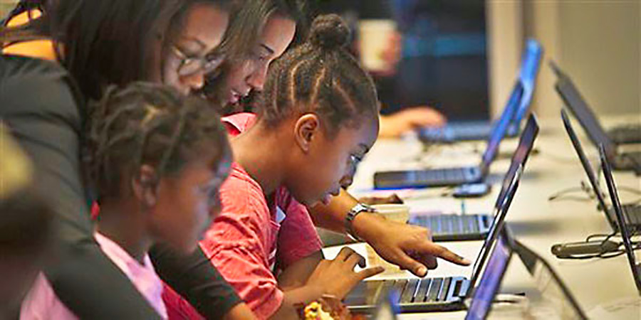

Founded in 2025 by local college students in Evaton. Taric Coding School offers after-school coding lessons to youth. It started with around 10 students in a borrowed classroom and has plans to expand into multiple townships to shape the youth, our future, for the betterment.
To empower the youth with coding skills and digital literacy in our growing technological world
Is to have a tech ready generation that will shape South Africa's future
